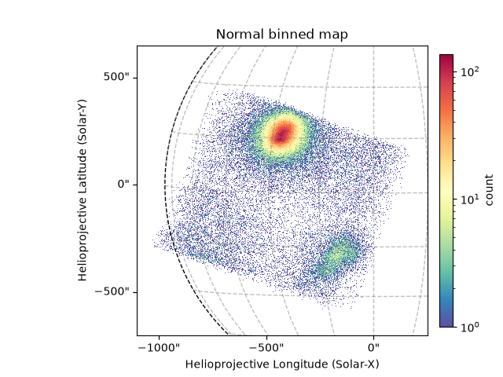
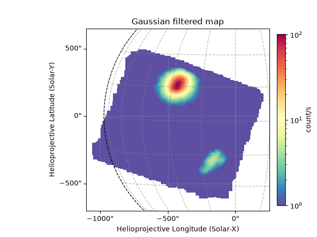
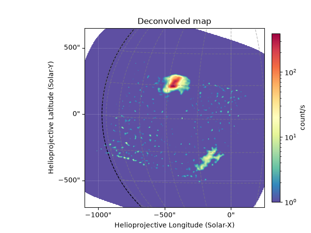

Note
Go to the end to download the full example code.
Plotting NuSTAR Images
This example shows making NuSTAR images.
import ntpath
import os
import urllib.request
import astropy.units as u
import matplotlib.pyplot as plt
from jdhsrpy import TEST_DATA_LOCATION
from jdhsrpy.image_filters import deconvolve_with_file, gaussian_filter
from jdhsrpy.nustar_evt import NustarEvt, draw_grid, normalize_map
Download an example “sunpos” NuSTAR EVT file.
url = f"{TEST_DATA_LOCATION}/test_nustar_data/nu20619003001A06_cl_sunpos.evt"
filename_evt = os.path.join(os.getcwd(), ntpath.split(url)[1])
if not os.path.isfile(filename_evt):
urllib.request.urlretrieve(url, filename_evt)
url = f"{TEST_DATA_LOCATION}/test_nustar_data/nu20619003001A_fpm.hk"
filename_lvt = os.path.join(os.getcwd(), ntpath.split(url)[1])
if not os.path.isfile(filename_lvt):
urllib.request.urlretrieve(url, filename_lvt)
url = f"{TEST_DATA_LOCATION}/test_nustar_data/nuA2dpsfen1_20100101v001.fits"
filename_psf = os.path.join(os.getcwd(), ntpath.split(url)[1])
if not os.path.isfile(filename_psf):
urllib.request.urlretrieve(url, filename_psf)
Use the class to load in and work with the file.
nustar_object = NustarEvt(evt_filename=filename_evt)
Image filters
Any image filter from ~jdhsrpy.image_filters will return a Sunpy
map object. This means that the Sunpy map API can be used with their
output.
Additionally, these filters can be chained together very easily, with the output of one filter being able to be passed as an input into another.
Normal binned image
There are three user methods that can be used, two to save time and
the final more general one called nustar_map.
The general one allows a user to specify the bounds for the map.
# obtain a Sunpy map object of the NuSTAR observation
bottom_left = [-1100, -700] << u.arcsec
top_right = [250, 650] << u.arcsec
m = nustar_object.nustar_map(bottom_left, top_right)
# now use it in plotting, this is now just Sunpy API stuff
fig = plt.figure()
ax = fig.add_subplot(projection=m)
m.plot(axes=ax)
draw_grid(m, ax)
plt.title("Normal binned map")
plt.colorbar(fraction=0.035, pad=0.03, label=m.meta["PIXLUNIT"])
plt.show()

Time normalized image
A function exists to normalize the map object using the HK livetime data. This will normalize the map by the average livetime in the time the event list spans.
nm = normalize_map(m, filename_lvt)
fig = plt.figure()
ax = fig.add_subplot(projection=m)
nm.plot(axes=ax)
draw_grid(m, ax)
plt.title("Livetime normalized map")
plt.colorbar(fraction=0.035, pad=0.03, label=nm.meta["PIXLUNIT"])
plt.show()
Gaussian filtered
The module iamge_filters exist that provide a convenient way to
edit the Sunpy map objects that we’re plotting.
For example, a Gaussian filter one exists and all we have to do is apply it to the map as it returns a new sunpy map object where the data has been smoothed.
gm = gaussian_filter(m)
fig = plt.figure()
ax = fig.add_subplot(projection=m)
gm.plot(axes=ax, vmin=1e0)
draw_grid(m, ax)
plt.title("Gaussian filtered map")
plt.colorbar(fraction=0.035, pad=0.03, label=gm.meta["PIXLUNIT"])
plt.show()

Deconvolving
Another useful image technique is deconvolvution. Two functions exist
for this deconvolve_with_file and deconvolve_with_array. Let’s
look at the former.
dm = deconvolve_with_file(m, filename_psf)
fig = plt.figure()
ax = fig.add_subplot(projection=m)
dm.plot(axes=ax, vmin=1e0)
draw_grid(m, ax)
plt.title("Deconvolved map")
plt.colorbar(fraction=0.035, pad=0.03, label=dm.meta["PIXLUNIT"])
plt.show()

Total running time of the script: (0 minutes 6.444 seconds)